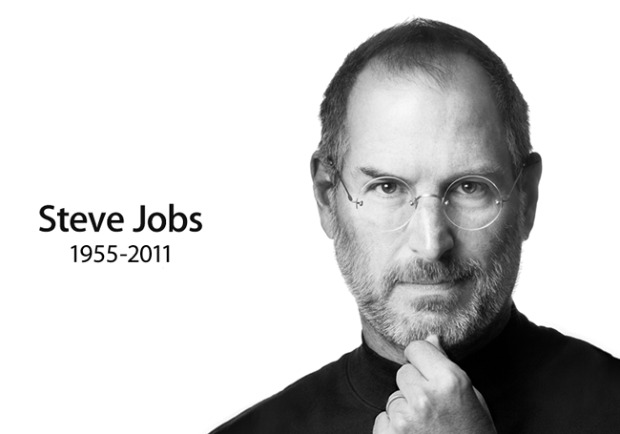

Ritchie es conocido sobre todo por ser el creador del lenguaje de programación C y cocreador, junto con Ken Thompson, del sistema operativo Unix.
Mark Elliot Zuckerberg (White Plains, Nueva York; 14 de mayo de 1984) es un programador y empresario estadounidense,
empresario estadounidense y fundador de Apple Inc. ... Para otros usos de este término, véase Steve Jobs desambiguación